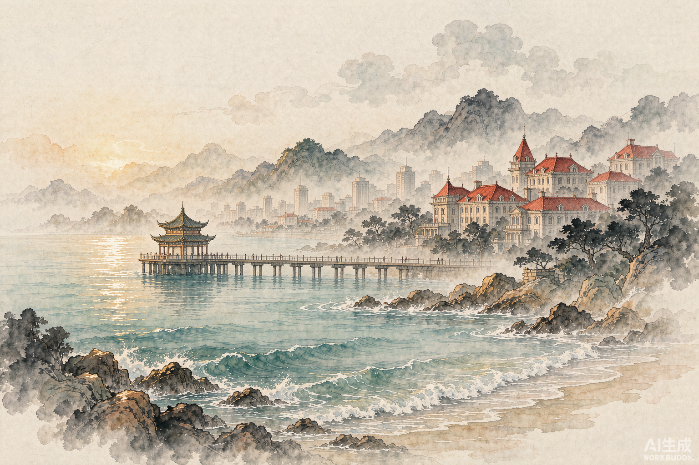

周末没待在宿舍改 bug，去了趟海边。青岛的秋天很好，风不燥，天很高，海是那种把蓝色稀释过很多遍的蓝。

栈桥一带，海雾把远处收得很淡。
海
站在堤上，看浪一层层推过来又退回去。很奇怪，明明什么也没做，心里那些拧着的线却松了一些。也许人需要一点「无用的时间」，不产出、不打卡，只是站着。
海不会催你，它只是在那里。你走或不走，它都按自己的节奏起伏。
栈桥的灯
傍晚灯亮起来，一串暖黄沿着栈桥铺向海里，像一行没有分号的代码，一直延伸，却不知道在哪结束。我掏出手机想拍，又放下了——有些东西拍下来不如记在心里。
代码与海
回去的路上我在想，写代码和看海其实挺像的。都是面对一个很大的、看不清全貌的东西，只能一点一点试探：改一行，跑一下，看看反应，再决定下一步。
调试的时候会烦，会怀疑自己；但一旦跑通，那种安静下来的踏实感，和看海时很像。都不是喧哗的快乐，而是「终于对上」的那种平静。
那段没写完的代码
对，那天的项目还没写完，一个坐标系转换的报错卡了我半天。但我不急了。回来泡了杯茶，重新看了一遍文档，问题的方向其实早就写在那里，只是我太想快点了。
海教会我的，大概就是慢一点也没关系。方向对了，浪总会把你送到岸边。